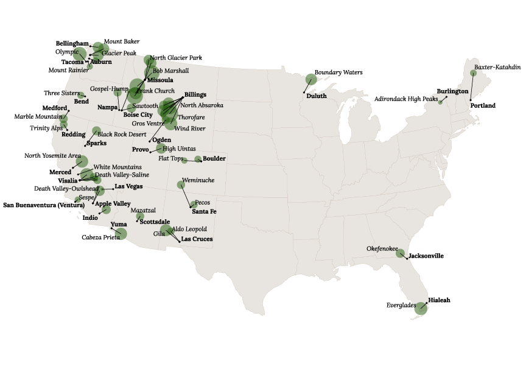
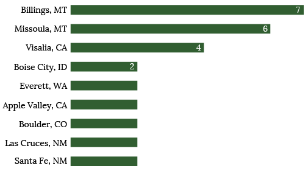

Best of Both Worlds
BY Jessica McKenzie
Published August 25, 2018
The most remote wilderness areas in the lower 48, and the closest city to that point
The diameter of the wilderness areas corresponds to the radius of the circle of wilderness that can be drawn around the most remote point, from the largest (Thorofare - 18.76 miles) to the smallest (Death Valley-Panamint - 4.02 miles).
SOURCES: Peakbagger.com; Centers for Disease Control and Prevention
“Thousands of tired, nerve-shaken, over-civilized people are beginning to find out that going to the mountains is going home; that wildness is a necessity; and that mountain parks and reservations are useful not only as fountains of timber and irrigating rivers, but as fountains of life,” John Muir wrote in 1898. Protections for wild lands were enshrined in the 1964 Wilderness Act, which set aside swaths of land in which no motor vehicles would be allowed, and which we can still visit when we're feeling “over-civilized.”
Peakbagger.com crunched the numbers to calculate the most remote points in the contiguous United States, “the most isolated, wild, and hard-to-reach in the USA without venturing to Alaska.”
What if you crave these escapes to wilderness and once-a-year vacations just won't do? What if you want to escape once a month, or once a week? Where should you live, if you want to live in a city where you can get a decent internet connection, have a choice between restaurants, and the other perks that come with city life, but also be able to escape to one or more of the protected wildernesses left in our country?
Bottom line: Your best bet is Billings, Montana, which is the closest city to no fewer than 7 of these remote destinations.
Cities closest to two or more remote wilderness areas
SOURCES: Peakbagger.com; Centers for Disease Control and Prevention